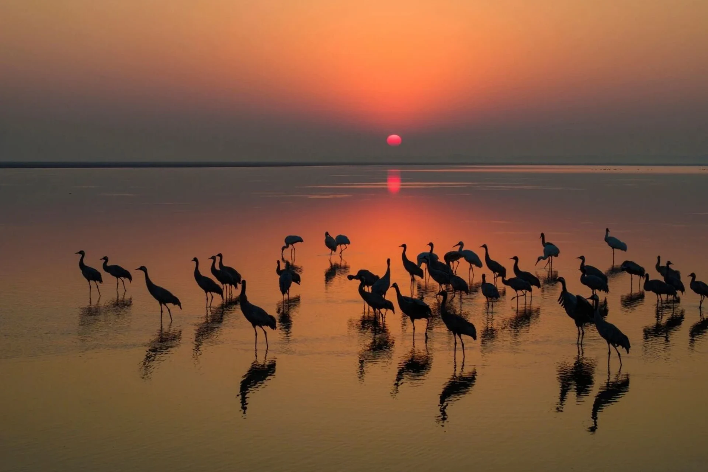
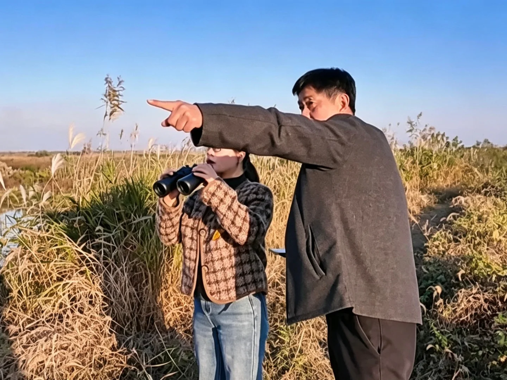
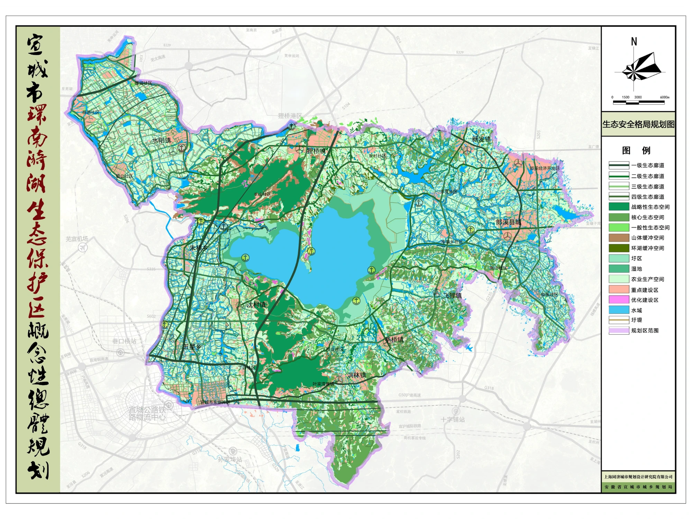
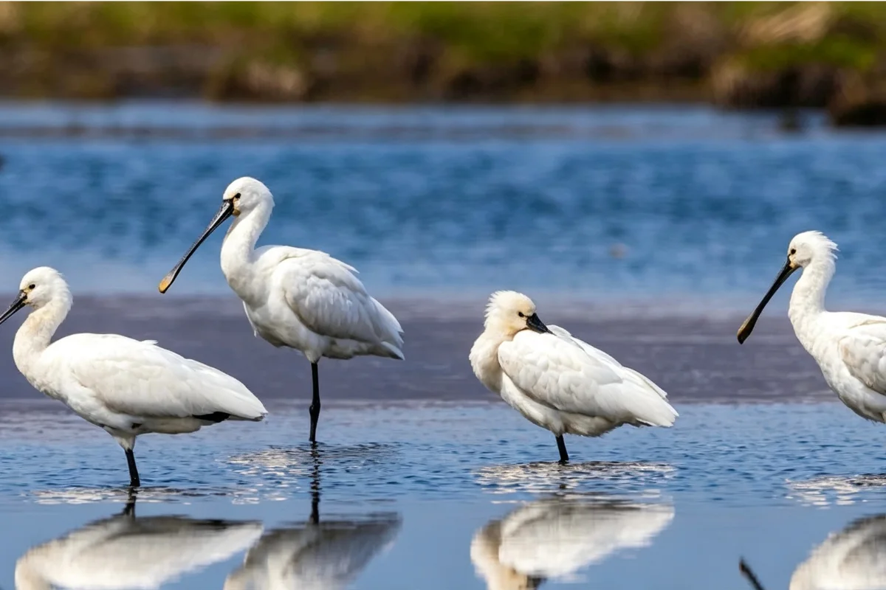
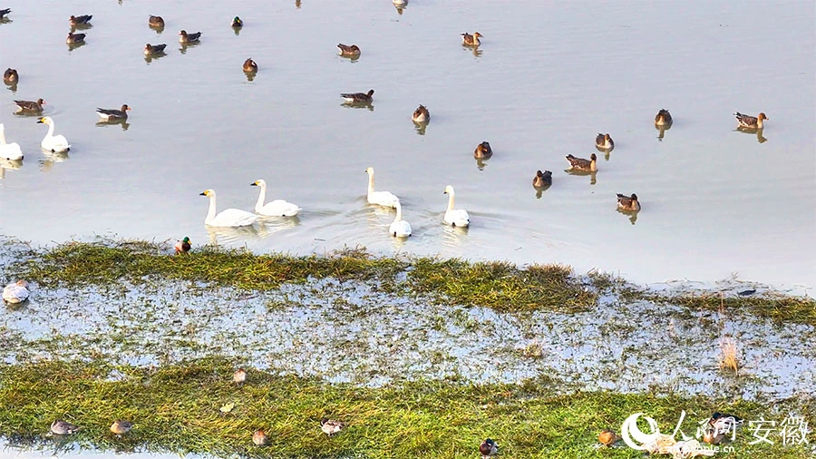

东方白鹳资料图 · Alpsdake（新窗口） · CC BY-SA 4.0（新窗口）

候鸟赴皖 · 数据新闻
万羽南归：数据解码宣城湿地的候鸟驿站变迁
——跟着候鸟的翅膀，看一片湿地如何重新开张
一片曾被围网切碎的水面，如今重新成为候鸟落脚的浅滩。每年秋冬，万千候鸟循着东亚—澳大利西亚迁飞通道而来，在南漪湖、宛陵湖、水阳江—宛溪河与扬子鳄保护区停歇越冬。水面涨落、滩涂进退、岸线新旧——宣城湿地从受损、萎缩到修复、重生的这场转身，就写在候鸟年复一年的落脚里。
一、鸟的选择：从3000只到3万只
候鸟的归来，是生态改善最直观的信号。巡护观测记录显示，南漪湖已成为众多水鸟重要的越冬地：2024年12月，湖区当日观测候鸟突破3000只，其中小天鹅约500只；2025年1月的报道中，巡护员记录的2024—2025越冬季单次最高值超过3万只。东方白鹳、鸿雁等重点保护鸟类在此现身；城市湿地宛陵湖，则成为十余种鸟类的栖息家园。
南漪湖候鸟代表性观测记录
宣城湿地重点保护鸟类名录
点击照片查看记录二、鸟的脚下：8.27万公顷的湿地
鸟儿的选择，离不开栖息地的支撑。宣城以南漪湖为核心，串联起多处类型各异的湿地，全域湿地总面积达8.27万公顷。南漪湖面积189平方公里，经系统治理完成1239公顷生态修复；扬子鳄保护区同步修复263公顷；入湖口1270亩养殖塘改造为净化湿地。2021年，南漪湖水质总体为良好，呈中营养状态。
按8公顷以上湿地统计，宣城市湿地面积为5.26万公顷，湿地保护率52.68%。人民网，2025年2月20日 ↗
宣城核心湿地规模与修复面积
南漪湖关键水质指标变化
三、改变从哪来：拆掉的网与降下的磷
生境蝶变的背后，是持续推进的保护与管护。南漪湖累计拆除养殖围网62000余米，破除围湖子埂50处；飞鲤镇布设7个360度监控探头，配备2名专职巡护人员。郎溪县成立鸟类保护工作专班，常态化开展巡护执法；南漪湖、桐汭等省级湿地获得722万元省级财政支持，为候鸟栖息筑牢屏障。

湿地保护修复前后成效对照
宣城湿地保护关键投入统计
四、鸟的行期：十一月来，二月走
循着候鸟的迁徙节律，每年11月中下旬大批水鸟陆续抵达，12月至次年1月迎来越冬高峰。2025年12月，佩戴卫星颈环的豆雁“阿芷”改变传统迁徙路线，降落南漪湖越冬，成为迁飞通道上驿站被重新选择的鲜活例证。
宣城候鸟迁徙时序
五、结语
万千候鸟飞越千里，将翅膀落在宣城的湖滩之上。一组组监测数据显示，经过持续治理，宣城诸多湿地已经真正成为东亚—澳大利西亚迁飞通道上可靠的越冬与补给驿站，鸟儿们用翅膀投票，见证着湿地由衰转盛的变化，也诠释着人与自然和谐共生的现实意义。
数据来源：宣城市人民政府、宣城市林业局、安徽日报、央视新闻、大皖新闻等公开报道。
鸟类照片与许可
迁徙驿站
图中编号对应宣城的五处观鸟点。点选任一处，查看当地鸟种和观鸟季节。

点位依据 © OpenStreetMap 贡献者，按原图比例标示。 查看原图
湿地鸟类名片
小天鹅资料图 · Maga-chan（新窗口） · CC BY-SA 2.5（新窗口）
鸿雁资料图 · 自由风bj（新窗口）
鸳鸯资料图 · 央视网（新窗口）
白琵鹭｜内蒙古额尔古纳 · 宝金财 摄 · 新华社（新窗口）
白鹭资料图 · El Golli Mohamed（新窗口） · CC BY-SA 4.0（新窗口）
观鸟小测
选择答案，查看解析。

01 / 认一认
图中嘴端宽扁、形似琵琶的鸟是？

02 / 想一想
观鸟时，如果鸟因你的靠近停止觅食、开始警戒，应该怎么做？
湿地影像
候鸟迁徙与保护
画面素材：Pixabay（新窗口）、Pexels（新窗口）封面：Pixabay（新窗口）部分音频及字幕：央视网《焦点访谈》· 护航候鸟迁徙路（新窗口）
保护候鸟，从这六件事开始
从观察方式、出行习惯和信息记录做起。
01保持距离，让观察少一点打扰
沿开放步道、观鸟点或管理人员指定区域观察，使用望远镜或长焦镜头，不追着鸟群移动。如果鸟类因你的靠近而持续警戒、停止觅食或准备逃离，应停止接近并后退，不以拍到近景为目标。
02不投喂，不为镜头改变鸟的行为
不以食物、声音或其他方式引诱鸟类，不围堵、不追逐，不用无人机近距离追拍鸟群。看到专业监测或救护现场时，听从工作人员安排，不把专业操作模仿成个人体验。
03保护岸线，留下完整的栖息空间
带走食物包装、塑料袋和其他随身垃圾，不向水中丢弃物品。不要进入芦苇丛、浅滩或封闭保育区域，不为取景折枝、清草或移动巢材；发现废弃线网等隐患，可记录位置后反馈管理人员。
04认真记录，让热心变成可用信息
记录观察的时间、地点、鸟类数量和行为，并在不惊扰的距离拍摄。无法确认物种时标注“待识别”，不要猜成珍稀物种。向正规观鸟组织或管理单位提供记录，不公开传播巢址、幼鸟等敏感位置。
05遇到异常，先求助再行动
发现受伤、受困鸟类时，保持距离，避免围观，不擅自抓取、喂食、灌水或带回家。记录准确地点、明显异常和周边风险，联系当地林业部门；不知道归口单位时，可拨打12345咨询转办。
06参与协作，支持长期的守护
关注当地林业部门、湿地管理机构和正规志愿组织的活动，通过报名、培训参与科普、清洁或监测辅助工作。遵守组织安排，不自行拆网、追查或处理野生动物；向身边人分享经核实的护鸟知识。
湿地相册
点击照片放大查看。
6 张照片
听，鸟的声音
点击播放，听听四种鸟的声音。
声音来源：懂鸟小程序
请勿在野外外放诱鸟。
01
东方白鹳
02
白鹭
03
鸿雁
04
白琵鹭
守护者
雁落南漪湖，他在岸边数鸟
从事基层工作近40年的他，是南漪湖生态变迁的亲历者，对这里的一草一木、一鸟一兽都充满了深厚的感情。
2025年报道中的虞宗贤，带领队员沿湖巡护，并借助无人机记录候鸟种类与数量。他的工作把湖岸上的日常巡视与持续监测连接起来：既看鸟群在哪里停留，也关注栖息环境怎样变化。
“我们不能辜负了这些候鸟选择南漪湖作为落脚点。”
——虞宗贤
跨越800公里，他只为守候一只豆雁
周自然是岳阳人，家住长沙，从2011年起就关注候鸟迁徙。他一直跟踪着一只名叫“阿芷”的豆雁。往年秋冬，它会飞回湖南洞庭湖越冬。2025年12月，定位显示，它改了路线，停在了安徽宣城的南漪湖。
周自然放心不下，从长沙开了800公里的车，12月23日赶到南漪湖。为了不惊动雁群，他站在远处的湖岸上，用长焦镜头拍照。整理照片时，他发现其中一只豆雁戴着颈环。对照手头的豆雁图册，他认出了“阿芷”。
“不追逐、不围观、不打扰”
——周自然
关于本专题
资料与来源
数据素材来源 13条
- 央视新闻 · 郎溪县融媒体中心安徽郎溪：白天鹅“恋上”南漪湖 候鸟规模创新高（新窗口）
- 大皖新闻绿水青山鸟飞回｜宣城南漪湖变身“天鹅湖”（新窗口）
- 郎溪发布南漪湖迎来候鸟迁徙高峰（新窗口）
- 宣城日报宛陵湖畔，生态观鸟（新窗口）
- 安徽日报构建“万千生灵”守护屏障（新窗口）
- 宣城日报宣城湿地资源保护取得显著成效（新窗口）
- 人民网安徽频道宣城市湿地资源保护取得显著成效（新窗口）
- 宣城市生态环境局《南漪湖水污染达标治理工作方案》政策解读（新窗口）
- 宣城市生态环境局2021年宣城市生态环境状况公报（新窗口）
- 宣州区人民政府宣州区扎实推进南漪湖流域综合治理筑牢生态屏障（新窗口）
- 宣城市生态环境局2023年5月二季度新闻发布会发布实录（新窗口）
- 宣城市林业局爱鸟护鸟推进鸟类保护工作（新窗口）
- 大皖新闻“阿芷”来到了南漪湖（新窗口）
视频素材来源
- 画面素材库Pixabay（新窗口）、Pexels（新窗口）
- 视频封面Pixabay · 素材 342468（新窗口）
- 部分音频及字幕央视网《焦点访谈》· 护航候鸟迁徙路（新窗口）（2024年11月17日）
文字报道与行动建议 22条
- 宣城市政府南漪湖迎来候鸟迁徙高峰（新窗口）
- 郎溪县融媒体中心安徽郎溪：白天鹅“恋上”南漪湖 候鸟规模创新高（新窗口）
- 长沙晚报跨越800公里，他只为守候一只豆雁（新窗口）
- 宣城市林业局全市鸟类保护工作专题会议召开（新窗口）
- 宣城日报“空中刺客”进山偷猎（新窗口）
- 广德市人民政府广德市湿地保护规划（2024—2030年）（新窗口）
- 人民网／国家林草局转载安徽宣城：接力守护候鸟记（新窗口）
- 站点文字南漪湖（新窗口）
- 站点文字宛陵湖（新窗口）
- 站点文字水阳江—宛溪河（新窗口）
- 站点文字敬亭山（新窗口）
- 站点文字鳄鱼湖（新窗口）
- 物种资料东方白鹳（新窗口）
- 物种资料小天鹅（新窗口）
- 物种资料鸿雁（新窗口）
- 物种资料鸳鸯（新窗口）
- 物种资料白琵鹭（新窗口）
- 物种资料白鹭（新窗口）
- 宣城市林业局郎溪县林业事业发展中心开展爱鸟护鸟主题活动（新窗口）
- 国家林业和草原局关于切实加强秋冬季候鸟等野生动物保护工作的通知（新窗口）
- 宁国市人民政府爱鸟护鸟齐行动 生态理念入人心（新窗口）
- 国家林业和草原局湖北神农架林区成立观鸟协会激活观鸟经济（新窗口）
图片与声音出处 15组
- 封面、群鸟展翼宣城林业微信公众号（新窗口）
- 观察点地图宣城自然资源和规划局
- 南漪湖宣城林业微信公众号（新窗口）
- 宛陵湖宣城林业微信公众号（新窗口）
- 水阳江规划图宣城自然资源和规划局（新窗口）
- 敬亭山宣城市敬亭山管委会
- 鳄鱼湖、枝上展翅、白琵鹭题图宣城林业微信公众号（新窗口）
- 白琵鹭宝金财 摄 · 新华社（新窗口）
- 湿地风光、白鹭齐飞、南漪湖候鸟人民网安徽频道（新窗口）
- 林间鸟影、枝头小憩宣城林业微信公众号（新窗口）
- 湖畔巡护、虞宗贤郎溪融媒体中心（新窗口）
- 周自然长沙晚报（新窗口）
- 东方白鹳声音、白鹭声音、鸿雁声音、白琵鹭声音懂鸟小程序
- 观鸟小测 · 宣城南漪湖候鸟郭昊 摄 · 人民网安徽频道（新窗口）
- 观鸟经济 · 黄山傍霞村溪边拍鸟张端 摄 · 新华社（新窗口）
鸟类照片与许可 18张
- 东方白鹳 · 湿地鸟类名片Alpsdake · Wikimedia Commons（新窗口） · CC BY-SA 4.0（新窗口）
- 中华秋沙鸭Rufus46 · Wikimedia Commons（新窗口） · CC BY-SA 3.0（新窗口）
- 小天鹅 · 湿地鸟类名片Maga-chan · Wikimedia Commons（新窗口） · CC BY-SA 2.5（新窗口）
- 鸿雁 · 湿地鸟类名片自由风bj · 新摄影（新窗口）
- 豆雁agulivanov · Wikimedia Commons（新窗口） · CC BY 4.0（新窗口）
- 鸳鸯 · 湿地鸟类名片央视网（新窗口）
- 白鹭 · 湿地鸟类名片El Golli Mohamed · Wikimedia Commons（新窗口） · CC BY-SA 4.0（新窗口）
- 池鹭JJ Harrison · Wikimedia Commons（新窗口） · CC BY-SA 3.0（新窗口）
- 夜鹭Frank Schulenburg · Wikimedia Commons（新窗口） · CC BY-SA 3.0（新窗口）
- 黑水鸡Alexis Lours · Wikimedia Commons（新窗口） · CC BY 4.0（新窗口）
- 翠鸟Andreas Trepte · Wikimedia Commons（新窗口） · CC BY-SA 2.5（新窗口）
- 白头鹎Noel Reynolds · Wikimedia Commons（新窗口） · CC BY 2.0（新窗口）
- 金翅雀se1 · Wikimedia Commons（新窗口） · CC BY 4.0（新窗口）
- 东方白鹳 · 数据新闻桑新华 · 泰山风景名胜区管理委员会（新窗口）
- 小天鹅 · 数据新闻belvedere04 · Wikimedia Commons（新窗口） · CC BY 4.0（新窗口）
- 鸿雁 · 数据新闻grihahasanov · Wikimedia Commons（新窗口） · CC BY 4.0（新窗口）
- 鸳鸯 · 数据新闻刘兆瑞 · 泰山风景名胜区管理委员会（新窗口）
- 白鹭 · 数据新闻Hobbyfotowiki · Wikimedia Commons（新窗口） · CC0（新窗口）